Automatic Detection of Carbon Nanotubes in images
This study was performed at Grenoble during an event called Semaine d'Étude Maths-Info Entreprises. I was in a team working on a subject proposed by Pollen Metrology on the analysis of images of nano-structures. The team was composed of myself, Debroux Noemie, Epequin Jesua and Leroy Vincent.
We were presented with the a problem dealing with the automated measurement of carbon nanotubes present in images obtained by a electron microscope. Carbon nanotubes have many interesting applications, but to test the quality of the production results one has to know the quality of the results. Namely, the number of layers of graphene of the tubes is an important factor in the applications. As it turns out, these layers seem to have a constant width, so knowing the width of the walls can show us how many layers of graphene we have in our tubes.
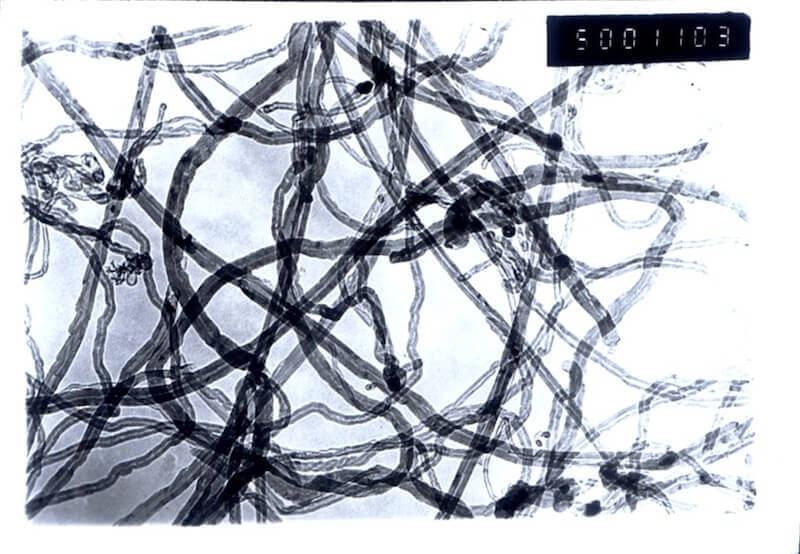
So the goal is that starting from an image like the one in the right we should be able to measure some of the tubes present in the image and measure the diameter of the walls. Using integration along lines one could find the diameters if we had a tube aligned with the boundaries of a rectangular box. So our objectives were to detect a tube (isolated if possible) and find its orientation so that we could put it in a nicely oriented box. There are some difficulties in tackling the problem:- The images are noisy and the noise is not gaussian so we can't eliminate it efficiently.
- The color intensities vary along the image (some parts are brighter than others) so we can't just look for specific color ranges.
- The nanotubes are not isolated so some parts of the image are crowded with overlapping tubes. Detecting tubes in these parts is hard and such tubes are not easy to measure.
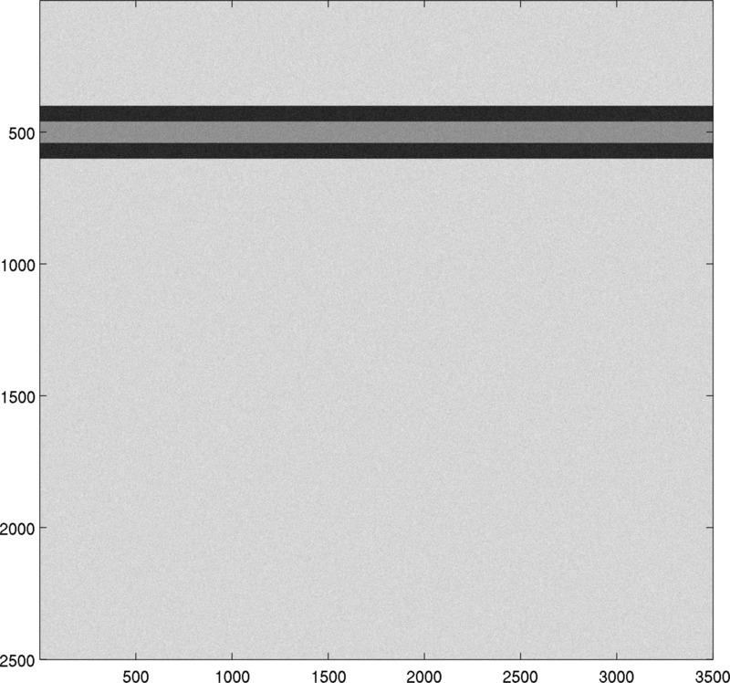
So here our work begins. I concentrated on a rather simple approach which is to look at slices of the images and try to see a pattern corresponding to the tubes. Here's a simple (handmade) example of what nano-tubes might look like: two horizontal bands with the same color, another color inside and the outside section. Taking a vertical slice of this image shows that the signal given by the colors in that slice makes a W near the tube. Therefore one could look for such W-shaped signals in order to try and locate the tube. It turns out that Matlab has a nice function 'normxcorr2' which does exactly that. The fact that it is a normalized correlation computation makes it detect flatter or deformed W shapes as long as they are indeed in a W form. The result of the detection procedure is shown below for these 'academic' images.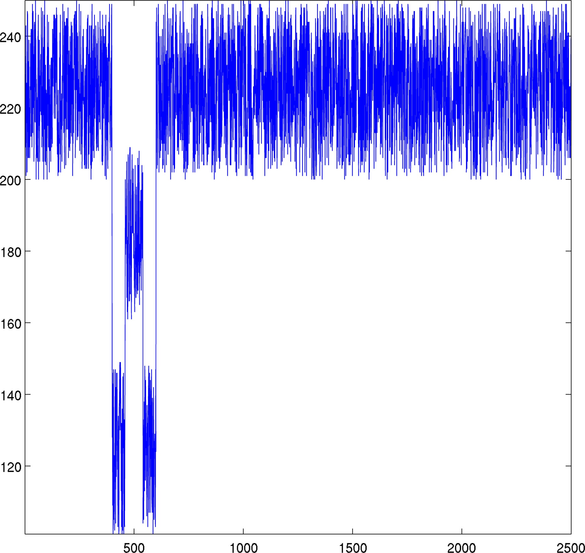 |
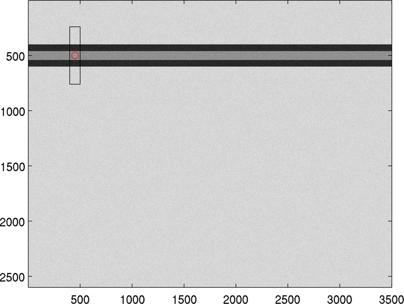 |
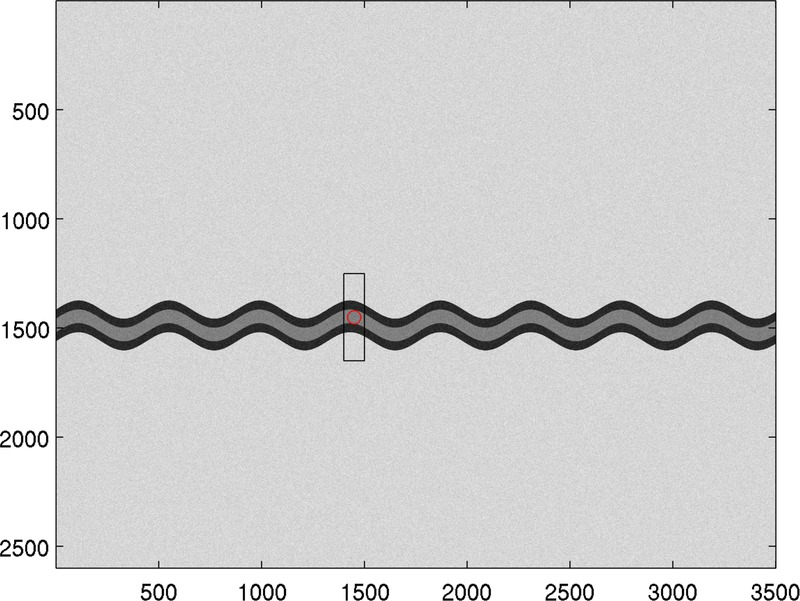 |
| Signal on a slice | Box detection using W signal | Same thing on an undulating tube |
Let's see now how this method works on real data. First we see that looking at just one slice does not show enough information in order to find the tube. This is due to the noisy image. In order to make things clearer, we consider a band of fixed width (let's say 100 pixels) and we average the signals on this band. This gives us a more precise image on the position of the tubes in this band.
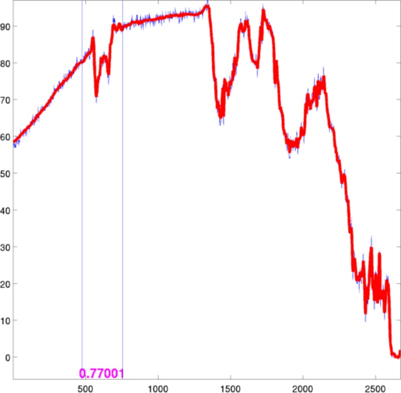 |
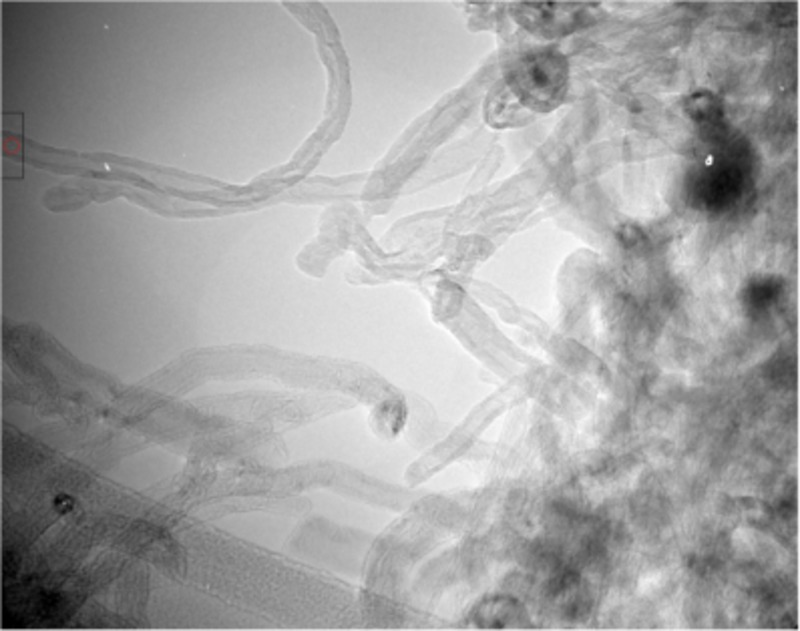 |
| Box detection using W signal | Location of the box in image |
In order to find tubes throughout the image we could just slide the detection band along the image and apply the above detection over each band. This produces quite nice results and we can deduce a criterion for "nice looking tubes". If we detect tubes at similar heights in neighboring bands than we can have a high degree of certainty that a tube is there. Note that we can also study tubes which are not horizontal by sweeping rotated copies of the image with the above method.
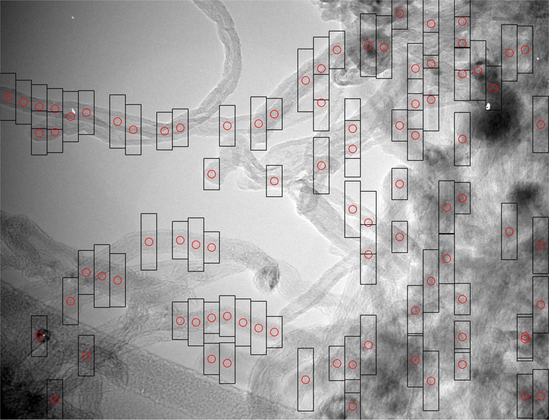 |
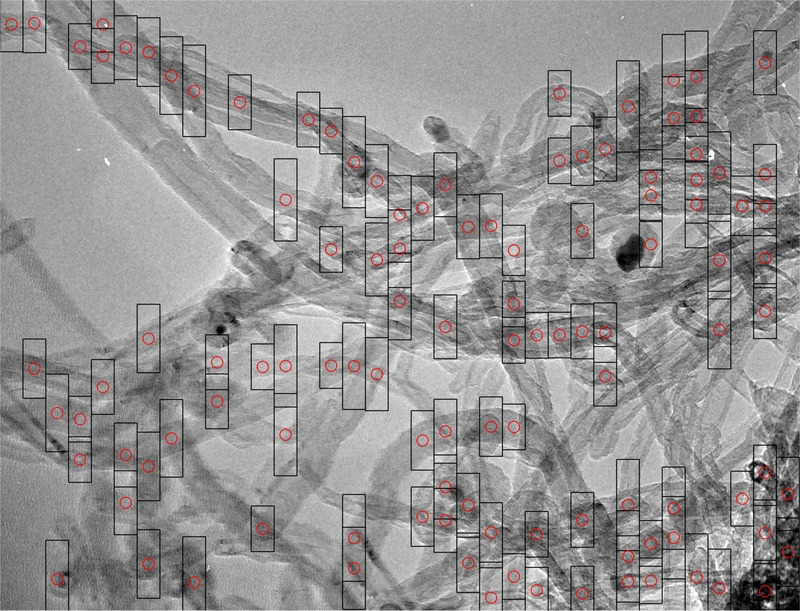 |
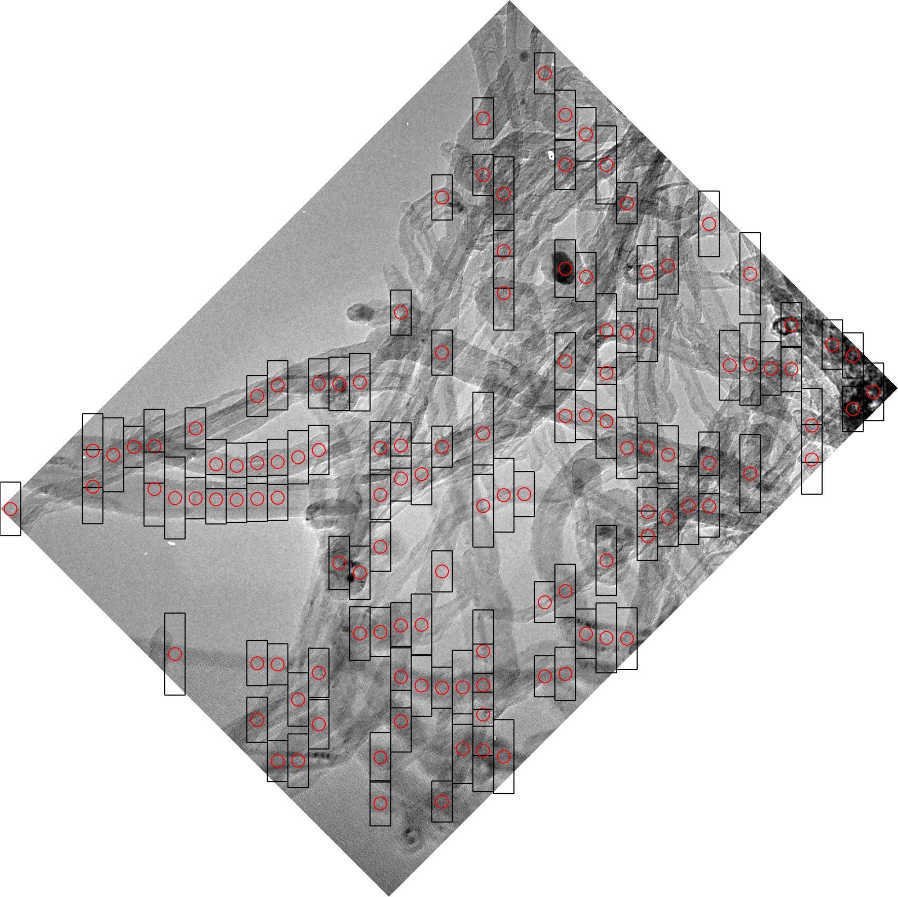 |
| Sweep - 100 pixel band | Sweep - 100 pixel band | Sweep on rotated image |
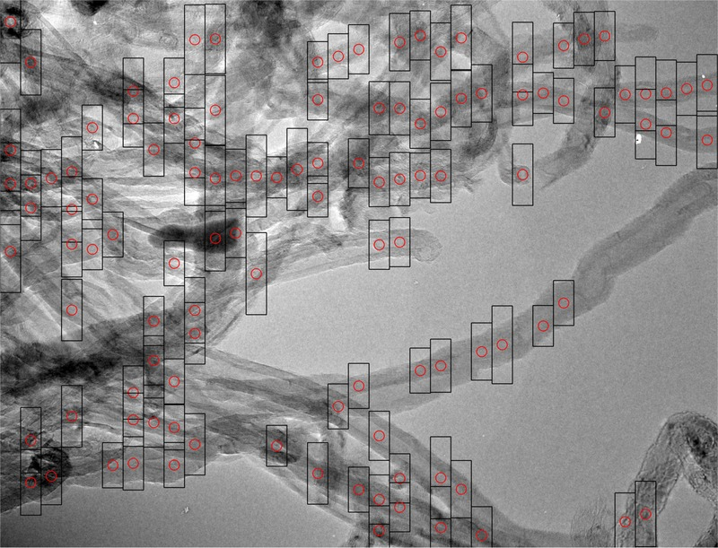 |
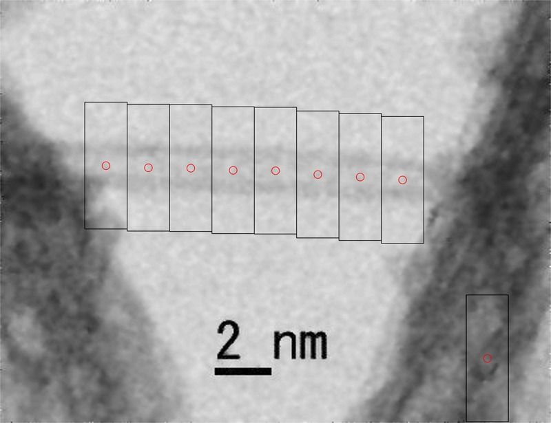 |
 |
| Sweep - 100 pixel band | Test on a Wikipedia picture | Test on another picture found on the internet. |
← Back to numerical computations
Created: Nov 2016